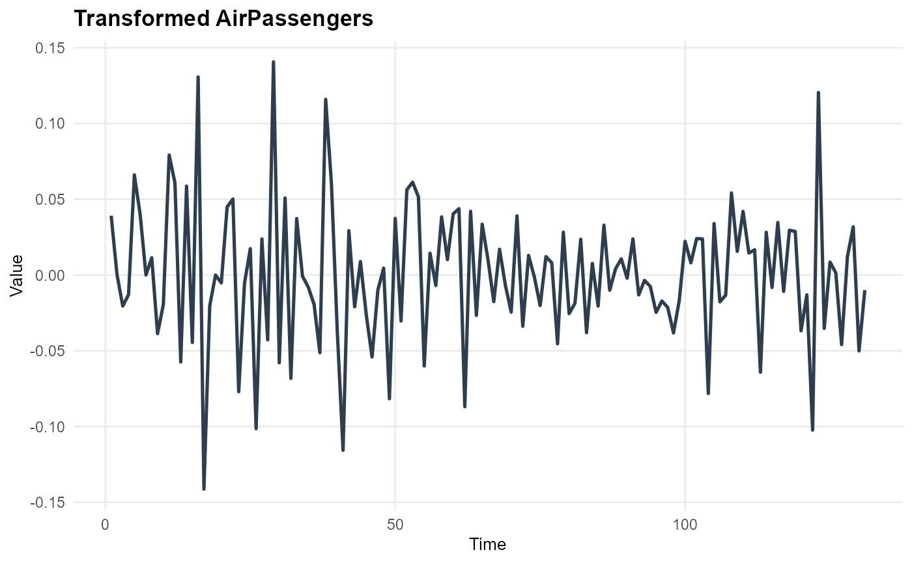

Applies variance-stabilising transformation (Box-Cox / log) and/or differencing, returning the transformed series together with all parameters needed to back-transform forecasts.
Usage
ts_transform(
x,
method = c("none", "log", "boxcox"),
lambda = NULL,
diff = 0L,
seasonal_diff = 0L,
frequency = NULL,
verbose = TRUE
)Arguments
- x
A numeric vector or
tsobject.- method
Character. Variance transformation:
"none"(default),"log","boxcox"(auto-selects lambda viaforecast::BoxCox.lambda()).- lambda
Numeric. Fixed Box-Cox lambda. Ignored unless
method = "boxcox". IfNULL(default), lambda is estimated.- diff
Integer. Number of regular differences (default
0).- seasonal_diff
Integer. Number of seasonal differences (default
0).- frequency
Integer. Series frequency, required when
xis a plain numeric vector andseasonal_diff > 0.- verbose
Logical. Print transformation summary (default
TRUE).
Value
A named list:
- transformed
Transformed
tsobject ready for modelling.- params
Named list with
method,lambda,diff,seasonal_diff,frequency— everything needed byts_back_transform().- summary
One-row tibble describing each step applied.
Examples
data(AirPassengers)
res = ts_transform(AirPassengers, method = "log", diff = 1,
seasonal_diff = 1)
#>
#> === ts_transform() ===
#> Steps: log(x) -> seasonal_diff(lag=12) -> diff(lag=1)
#> Length: 144 -> 131
res$summary
#> # A tibble: 1 × 4
#> original_length transformed_length steps_applied lambda
#> <int> <int> <chr> <dbl>
#> 1 144 131 log(x) -> seasonal_diff(lag=12) -> … NA
plot_ts(res$transformed, title = "Transformed AirPassengers")
